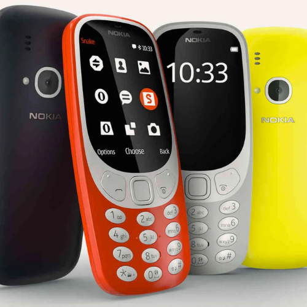
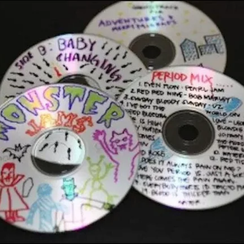
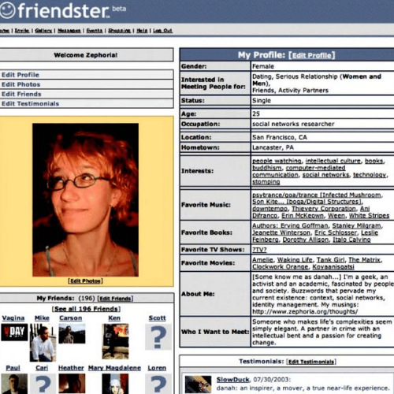
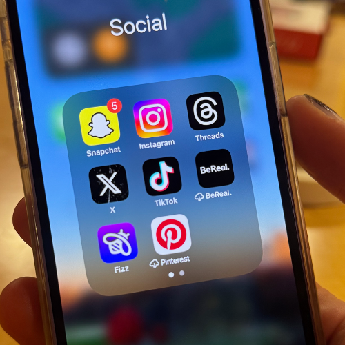
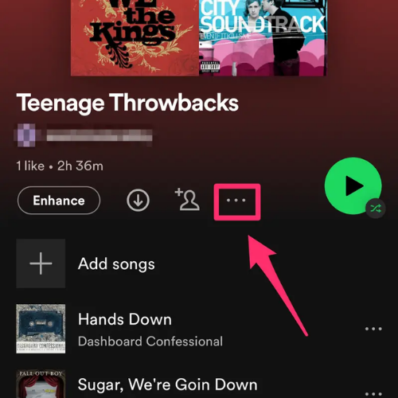
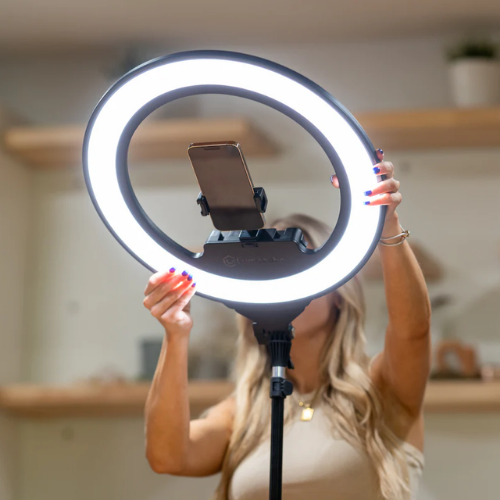

Afftect, Senses, & Feelings
Creator: Aiza Seguerra | Medium: OPM Hugot Ballad | Year: 2001
Cultural Relevance: This song became the emotional anthem of a generation navigating love, hope, and waiting. It planted the seeds of “hugot culture” that would later evolve on social media.
Memories & Lived Experience:
People sang this during karaoke nights, school programs, and guitar sessions under the trees. Students wrote the lyrics on notebooks and texted the song to crushes through Nokia phones. It became the soundtrack of quiet waiting and first heartbreaks.
The 2000s OPM Band Era
Afftect, Senses, & Feelings
Creator: ABS-CBN Productions | Medium: OPM Rock / Live Performance | Year: 2003–2008
Cultural Relevance: OPM bands dominated radio and school campuses. Their music expressed angst, love, and youth identity, shaping the emotional culture of Filipino teens.
Memories & Lived Experience:
Students traded CDs and MP3 files via infrared. School fairs featured campus bands covering Bamboo or Hale. Emo hairstyles, skinny jeans, and black wristbands became fashion staples. Concerts were the ultimate bonding experience for barkadas.
StarStruck (2003)
Performance
Creator: GMA Network | Medium: Reality Talent Show | Year: 2003
Cultural Relevance: StarStruck gave ordinary Filipinos the chance to become stars. It changed the landscape of performance culture by allowing the audience to vote via SMS.
Memories & Lived Experience:
Fans sent text votes using borrowed phones. Families gathered to cheer for their “bet.” Students copied contestants’ dance steps and poses during school contests. It made everyone feel that anyone — even a normal kid — could shine.
Wowowee (2005)
Performance
Cultural Creator: ABS-CBN Productions | Medium: Noon-Time Variety Show | Year: 2005
Relevance: Wowowee brought joy, generosity, humor, and dance into millions of households. It showcased the Filipino spirit of fun and resilience.
Memories & Lived Experience:
Households blasted the TV volume during the opening theme. Kids danced to “Boom Tarat Tarat.” OFWs watched it abroad to feel closer to home. Viewers rooted for contestants as if they were family members winning on stage.
School & Community Performances
Performance
Creator: Unknown | Medium: Field demos, school programs, barangay shows | Year:2000–2010
Cultural Relevance: Local performances expressed community pride and nurtured creativity outside the national stage.
Memories & Lived Experience:
Field demo days meant matching costumes from Divisoria, moms sewing outfits the night before, and practicing under the sun. Barangay singing contests turned shy kids into instant local stars. These moments shaped childhood memories and built lifelong confidence.
Naruto (2002)
Globalization
Creator: TV Tokyo / Masashi Kishimoto | Medium: Anime Series | Year: 2002
Relevance: Naruto fueled anime fandoms, cosplay communities, and internet café culture across the Philippines.
Memories & Lived Experience:
Kids practiced Naruto hand signs during recess. Teens saved wallpapers of Sasuke and Sakura on their phones. Internet cafés held anime marathons. Cosplay events grew in schools and malls, inspiring a new generation of artists and fans.
OFW Pasalubong Culture
Globalization
Creator: Filipino Overseas Workers | Medium: Global goods, media, fashion | Year: 2000–2010
Relevance: OFWs brought global culture into Filipino households through pasalubong: snacks, clothes, CDs, and gadgets that shaped family lifestyles.l
Memories & Lived Experience:
Children waited eagerly for balikbayan boxes filled with chocolates, branded shirts, and DVDs. Families used webcams at internet cafés for video calls. Pasalubong became a symbol of love, sacrifice, and global-connected Filipino life.
Today’s Culture
TRANSFORMATIONS (2015-2025): How Filipino pop culture evolved from physical, communal experiences into digital-first, emotionally expressive online worlds.
TikTok Hugot Culture
Afftect, Senses, & Feelings
Cultural Creator: Filipino TikTok Creators | Medium: Short-form Emotional Content | Year: 2020–2025
Relevance: Hugot culture evolved into digital storytelling, where humor, heartbreak, and healing spread through viral audios and relatable clips.
Influences:
Social: Online communities normalize vulnerability and emotional openness.
Cultural: Reinforces the Filipino love for drama, humor, and storytelling.
Political: Emotional content becomes a tool for awareness during crises or elections.
Environmental: Climate anxiety and pandemic emotions appear in trending “coping” videos.
Digital Empathy & Online Bonding
Afftect, Senses, & Feelings
Creator: Filipino Social Media Users | Medium: Messaging, Reactions, Shared Reels | Year: 2018–2025
Cultural Relevance: Filipino closeness survives through online group chats, reacting features, and digital forms of lambing and pakikisama.
Influences:
Social: Distance due to school/work migration increases reliance on digital communication.
Cultural: Maintains bayanihan through digital support groups.
Political: Online spaces become modern plazas for discussions.
Environmental: Disasters drive people to use online channels for comfort, updates, and help.
Livestream Performers & Digital Buskers
Performance
Creator: Filipino Livestreamers | Medium: FB Live, TikTok Live, Kumu | Year: 2020–2025
Cultural Relevance: Filipino performance tradition moves to digital formats where anyone can sing, dance, or host online.
Influences:
Social: Economic hardship pushes many to earn through online performance.
Cultural: Reinforces Filipino love for singing and live performance.
Political: Creators discuss elections, civic issues, and community needs.
Environmental: Livestreamed charity events arise after typhoons or wildfires.
Virtual Concerts & Fan Events
Performance
Creator: Filipino Artists & Fandoms | Medium: Digital Concert Platforms | Year: 2020–2025
Cultural Relevance: Concerts moved from arenas to screens, reducing barriers and bringing fans together online.
Influences:
Social: Digital fandoms foster belonging across islands.
Cultural: Reinforces Filipino passion for music and community.
Political: Fan groups organize donation drives and voting campaigns.
Environmental: Digital events reduce carbon footprint from travel and venues.
K-Pop & P-Pop Online Fandom Communities
Globalization
Creator: Filipino Fandoms | Medium: Discord, Twitter, TikTok | Year: 2018–2025
Cultural Relevance:Global fandom culture transforms how Filipinos interact, create art, and participate in worldwide fan movements.
Influences:
Social: Strong online friendships form based on shared idols.
Cultural: Hybrid fashion, language mixing (“unni,” “loml,” “bias”).
Political: Fandoms mobilize for causes, relief drives, and political education.
Environmental: Fan projects plant trees or reduce waste through eco-merch initiatives.
Global Streaming Era (Netflix, Spotify, YouTube)
Globalization
Creator: Global Media Platforms | Medium: Streaming Content | Year: 2016–2025
Cultural Relevance: Filipinos now access global media instantly, shaping hybrid tastes and diverse identities.
Influences:
Social: Shared global shows create new bonding moments.
Cultural: Local tastes merge with foreign influences.
Political: Documentaries and global news shape public opinion.
Environmental: Streaming affects energy consumption but reduces physical waste (no more CDs/DVDs).
Cultural Artifacts
Objects and tools Filipinos use to live, share, and feel pop culture — then and now.

Nokia 3310 & Early Keypad Phones
Decade: 2000–2010
Use in Pop Culture: Used for “GM” group messages, love quotes, and late-night text conversations, these phones were the main way Filipinos shared hugot, kilig, and secret confessions in the early 2000s.

Burned OPM & Emo Mix CDs
Decade: 2000–2010
Use in Pop Culture: Friends shared burned CDs filled with OPM ballads and emo rock. These homemade playlists carried the hugot soundtrack of crushes, breakups, and barkada road trips.

Friendster Profiles
Decade: 2000–2010
Use in Pop Culture: The first digital tambayan where Filipinos posted love quotes, emo photos, and “Top Friends.” Friendster became a space for early online kilig and identity-building.

TikTok Audios & Filters
Decade: 2015–2025
Use in Pop Culture: Modern hugot and kilig live in short POV clips, lip-syncs, and trends. Filipinos use TikTok to dramatize feelings, share jokes, and turn everyday life into content.

Spotify Playlists
Decade: 2015–2025
Use in Pop Culture: Instead of burned CDs, people now send curated playlists titled “for u,” “sad hours,” or “kilig mix,” keeping the tradition of sharing music as an emotional love language.

Ring Lights & Phone Tripods
Decade: 2015–2025
Use in Pop Culture: Essential tools for livestreamers, vloggers, and TikTok dancers. These simple devices turned bedrooms and salas into mini-studios for performance and self-expression.
Tomorrow's Possibilities
HORIZONS (2026-2030): A look into how Filipino pop culture may evolve in the next decade based on patterns from the past and influences of the present.
Tropical Climate Forensics
Artist: Derek Tumala | Medium: Digital Art | Year: 2022
Relevance: This digital desert scene makes extreme heat feel real. By showing a lone monolith and a glowing sun in a burned-out landscape, it reminds us that rising temperatures aren’t just numbers—they’re reshaping our homes, farms, and daily lives.
Analysis of Elements and Principles:
- Shape & Form: Monolith & portal slice through soft dunes; glowing orb anchors the gaze.
- Color & Value: Warm golds bathe the scene; deep shadows amp up drama.
- Texture & Space: Smooth, reflective sculptures vs. gritty sand; plants in front to faded dunes in back create depth.
- Balance & Emphasis: Vertical monolith counterbalances glowing portal; bright orb demands focus.
- Contrast & Movement: Light vs. dark & smooth vs. rough heighten tension; curving ridges and shadows guide the eye.
- Unity: Cohesive sunset palette and consistent low-angle light tie all elements together.
AnthropoScene
Artist: Katti Sta. Ana | Medium: Ceramic clay sculpture | Year: 2025
Relevance: Here, clay vessels and tiny ceramic forms sprout like pods in a mock-ecosystem. By mapping data on species loss into living shapes, it shows how we’re changing nature—and how, with care, we might rebuild fragile habitats.
Analysis of Elements and Principles:
- Material & Technique: Hand-built earthen clay in low relief, selectively burnished for subtle tonal shifts
- Form & Composition: Scattered bone fragments, seed-pod vessels and butterfly motifs arranged like an archaeological dig
- Color & Value: Aunified earthen brown with slight sheen variations between matte and polished surfaces
- Texture & Relief: Coarse, granular “soil” backdrop set against smooth, sculpted bones and finely detailed wings
- Rhythm & Movement: Butterflies trace a diagonal path, guiding the eye from decay toward symbols of metamorphosis
- Symbolism & Unity: Repeating motifs (skull, pod, butterfly) and consistent clay medium bind themes of death, transformation and hope
Forest
Artist: Benedicto “Bong” Ducat | Medium: Oil on canvas | Year: Early 2000s
Relevance: Ducat’s rainbow-tree painting turns a walk in the woods into a burst of color. By showing forests as living rainbows, it reminds us how vital trees are for clean air and cool summers—and why we must protect them.
Analysis of Elements and Principles:
- Form & Pattern: Rounded tree canopies punctuate vertical trunks in rhythmic clusters.
- Color & Value: Highly saturated greens, blues, oranges and yellows play off one another for a joyful, kaleidoscopic effect.
- Texture & Surface: Thick, dotted impasto marks create tactile foliage against smoother sky bands.
- Rhythm & Repetition: Repeated dot-brushstrokes unify foreground, midground and background.
- Unity: Consistent mark-making and a bright palette tie the entire woodland into a single, vibrant “forest.”
Mebuyan’s Colony
Artist: Leeroy New | Medium: Installation (bamboo frame + recycled plastic bottles) | Year: 2022
Relevance: This walk-through bamboo “colony” studded with upcycled plastic bottles shows one way communities can feed themselves and cut waste. It highlights how old materials can become new shelters or farms as we face more storms and food shortages.
Analysis of Elements and Principles:
- Structure & Scale: Modular bamboo spheres evoke oversized honeycombs or seed pods.
- Light & Reflection: Transparent bottles catch sunlight, casting prismatic glints across the site.
- Materiality & Message: Up-cycled plastic highlights waste-to-art and the fragility of island ecosystems.
- Spatial Interaction: Open framework invites wind, shadow play and visitor circulation through “colonies.”
- Organic Rhythm: Repeating spheres linked by bamboo “veins” mimic natural growth patterns.
Dolphin Mural
Artist: A.G. Saño | Medium: Outdoor mural painting | Year: 2010
Relevance: Saño’s wall of leaping dolphins turns a city corner into an ocean call. It wakes us up to threats facing marine life—like overfishing and pollution—and urges us to protect the creatures that keep our seas balanced.
Analysis of Elements and Principles:
- Line & Movement: Flowing, ribbon-like waves guide the eye through stylized dolphin pods.
- Color Palette: Cool blues and soft grays evoke clean water and reinforce a conservation message.
- Figurative Emphasis: Central dolphin group and pointing figure focus attention on aquatic life.
- Text Integration: Bold lettering (“DAGAT O LUPA…”) weaves advocacy directly into the composition.
- Balance & Focal Point: Symmetrical spread of marine motifs anchors the viewer in the center.
Polluted Palette (series)
Artist: JC Vargas | Medium: Watercolor on paper | Year: 2023
Relevance: Vargas paints city scenes using pigments made from real air pollution. By literally showing smog in watercolor, it makes the invisible danger of dirty air impossible to ignore—right on paper.
Analysis of Elements and Principles:
- Medium & Technique: Translucent washes bleed into one another, suggesting smog and sediment.
- Color & Metaphor: Muddy browns, grays and toxic greens evoke polluted skies and waterways.
- Abstract Composition: Fluid stains and hard edges mirror industrial run-off and chemical spills.
- Texture & Edge Quality: Granulating pigments and uneven borders heighten a sense of decay.
- Series Cohesion: Repeated palette of sullied hues reinforces the ongoing nature of pollution.
Blueprint of Dam as Sadistic Monument
Artist: Cian Dayrit | Medium: Textile Art | Year: 2022
Relevance: This embroidered tapestry maps how dams cut off rivers and push communities aside. By stitching hydropower’s hidden costs into fabric, it asks us to weigh energy gains against lost ecosystems and livelihoods.
Analysis of Elements and Principles:
- Material & Craft: Layered fabrics, hand-embroidery, beads and fringe build a dense tapestry.
- Iconography & Mapping: Embroidered dam silhouette surrounded by miniature river-village motifs.
- Detail Density: Thousands of tiny stitched figures and infrastructure elements teem across the cloth.
- Border & Contrast: Dark side-panels chart “Poverty,” “Displacement” and other social costs in white stitch.
- Narrative Critique: Text labels and visual metaphors condemn large-scale dam projects.
The Passage of Storms
Artist: Gab Mejia | Medium: Documentary photography series | Year: 2023
Relevance: Through photos of villages rebuilding after a powerful typhoon, Mejia shows both the damage of stronger storms and the unbreakable spirit of coastal communities. It’s a call to action to slow climate change and help people adapt.
Analysis of Elements and Principles:
- Composition & Sequence: A set of images captures pre-storm calm, violent weather and aftermath.
- Light & Mood: Dramatic backlighting and high-contrast frames underscore tension and relief.
- Texture & Detail: Raindrop patterns, wind-blown debris and waterlogged surfaces rendered in sharp focus.
- Human Context: Portraits and landscapes document community resilience amid environmental upheaval.
- Narrative Arc: The series format guides viewers through impact, response and recovery phases.
Call For Action: Let’s turn inspiration into action!
Reminisce & Revisit
♻️ – Rewatch a teleserye episode, replay an OPM classic, or revisit your favorite 2000s moment.
Share Your Story
🎨 – Post about a pop culture memory — a song, a scene, a trend — and how it shaped you.
Support Filipino Creators
🐚 – Stream P-pop, watch local films, follow Filipino artists whose works keep our culture evolving.
Celebrate Hybrid Identity
📢 – Join fandoms, attend local events, or explore cross-cultural collaborations that show how global and local merge.